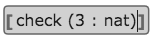
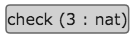
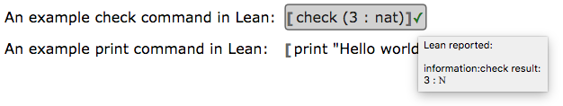

Lean App Tutorial, Part 1
The webLurch project is factored into two parts, as described here. The main app is built on a foundation that can be re-used to make many different apps. One of the example applications built on that foundation uses the software Lean (actually, its JavaScript implementation) to validate documents expressing mathematics using dependent type theory.
What does it do?
This tutorial assumes that you're familiar with Lean. If not, consider starting with Lean's own tutorial first.
The app documented here is a web-based word processor whose controls are self-explanatory, with some new features.

Marking Lean code
The buttons on the toolbar above provide a way for users to mark sections of their document as Lean code and to have those sections checked for validity.
The first of three buttons whose icon is two square brackets, [ ], can be
used to mark a section of text as Lean code. This wraps the text in special
square brackets as a visual indicator of the special treatment the app will
give that text. When the user's cursor is inside such code, a bubble will
be drawn around the code to make that fact visually obvious.

Users who do not wish to see the brackets (and rely instead only on the bubbles that appear when the cursor is inside the code) can toggle that feature using the View menu.

The other two bracket buttons, as well as the arrow button, will be covered in later parts of this tutorial.
Checking with Lean
The collection of Lean code in the document can be run through Lean in one step using the "Run Lean" button in the toolbar. This can take several seconds, since running a sophisticated application like Lean in a browser window is a nontrivial operation. Thus it is only run when the user explicitly clicks the button.
After it has been run, bubbles that produced any kind of output are decorated with a symbol, either ✓ or ✖, indicating whether the message was an error. You can find details about the Lean output by hovering your mouse over the symbol in question, as shown below.

So what?
Benefits
This means there is a simple UI in which you can type literate Lean code, and it looks nice. Furthermore, the validation results are presented as nicely as they are in the official online Lean environment.
Missing pieces
There are many disadvantages to the simple app just demonstrated, many of
which will be addressed individually in later pages in this tutorial. The
first disadvantage that comes to mind is that the reader still needs to
speak Lean code rather fluently (e.g., check and print and other
commands) to use this software. How might we improve that? Let's see: